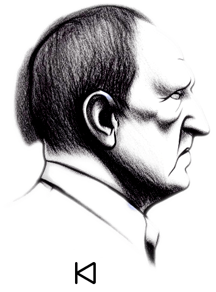
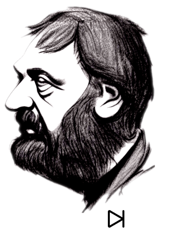

An AI-generated, never-ending discussion between Werner Herzog and Slavoj Žižek.
Everything you hear is fully generated by a machine. The opinions and beliefs expressed do not represent anyone. They are the hallucinations of a slab of silicon.

Werner Herzog
Loading the conversation...

Slavoj Žižek
About The Infinite Conversation
This project is an AI art experiment reproducing the iconic The Infinite Conversation created by Giacomo Miceli in 2022.
It produces synthetic dialogues between simulations of German filmmaker Werner Herzog and Slovenian philosopher Slavoj Žižek. Using modern LLMs (Gemini / OpenAI) for dialectical dialogue generation and neural voice synthesis (edge-tts) for spoken audio with millisecond-aligned WebVTT subtitles, it creates a self-perpetuating, endless philosophical stream.
The conversation reflects on the boundaries between synthetic and authentic speech, the nature of belief, ideological fantasy, and the existential solitude of technology.
Frequently Asked Questions
What is this?
A continuous, AI-generated dialogue between Werner Herzog and Slavoj Žižek. When you open this app, you tune into the discussion at a random point in time.
How is it implemented?
1. Dialogue Generation: Large language models prompted with Herzog's contemplative Bavarian cadence and Žižek's manic Lacanian philosophy.
2. Speech Synthesis: Neural text-to-speech with accented voice models and speech-rate conditioning.
3. Audio-Text Alignment: WebVTT subtitle markers generated alongside the speech waveform.
4. Web Audio API: Real-time frequency spectrum analysis dynamically visualizes audio frequencies with speaker-dependent color grading.
Is the conversation factually correct?
Far from it. It is pure hallucination and philosophical play.